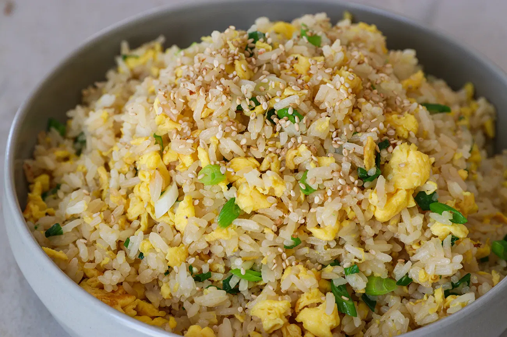

Fried Rice

Description
Basic Recipe for Fried Rice
Fried rice is a takeout favorite, but it's also quick and easy to make at home.
It's a great way to use up leftover rice (cooked, cold rice makes the best fried rice)
and transform boring leftovers into an entirely new dish.
The next time you're making rice, just make extra and stash it away.
Then, you'll have a delicious, quick fried rice dinner in no time.
Ingredients
- 1 to 2 green onions, chopped
- 2 large eggs
- Freshly ground pepper, to taste
- 1 teaspoon salt
- 3 tablespoons oil, divided
- 4 cups cooked rice, cooled
- 1 to 2 tablespoons light soy sauce (or oyster sauce)
Steps
- Gather the ingredients.
- Lightly beat the eggs with the pepper and salt.
- Heat a wok or frying pan over medium-high heat and add 1 tablespoon of the oil.
When the oil is hot, add the eggs. Cook, stirring, until they are lightly scrambled but not too dry.
Remove the eggs and clean out the pan.
- Add the remaining 2 tablespoons of oil. Add the cooked and cooled leftover rice.
Stir-fry for a few minutes, using a wooden spoon to break it apart.
Stir in the soy sauce or oyster sauce as desired.
- When the rice is heated through, add the scrambled egg back into the pan.
Mix thoroughly, then stir in the green onions. Serve hot.
Tip
If you add more ingredients to bulk up this dish, be sure to increase the number of eggs from two to three.
This will keep the ratio of eggs to rice well balanced.
Credit to Rhonda Parkinson
on Spruce Eats for the recipe.